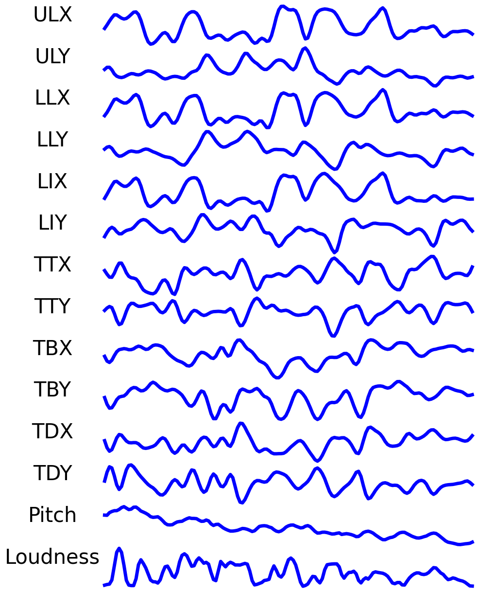
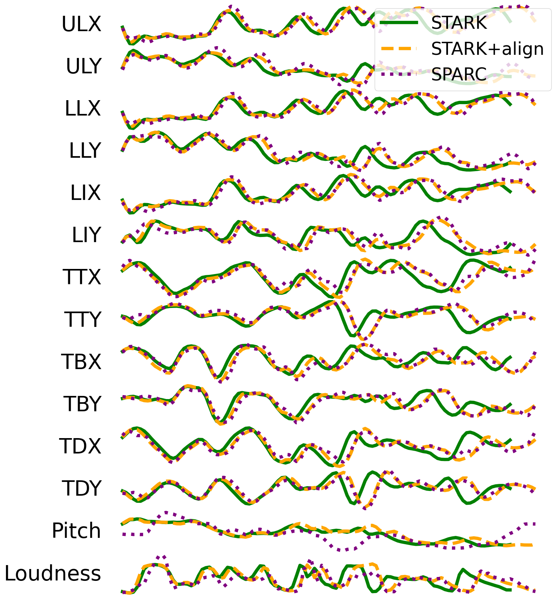

STArK: Towards Synthesizing Articulatory Kinematics from Text
Language Technologies Institute, Carnegie Mellon University · Interspeech 2026
Abstract
Recent deep learning approaches in modeling articulatory kinematics have shown success in mapping speech audio to electromagnetic articulography (EMA) kinematics, but these methods are limited by the scarcity of high-quality articulatory datasets. We introduce synthesizing text to articulatory kinematics (STArK), which offers a novel approach in generating articulatory kinematics directly from text. We train STArK on the LibriTTS-R dataset with pseudo-labeled EMA features derived from a pre-trained speech-to-articulation model. STArK is the first model to demonstrate high-quality articulatory kinematics generation from text. STArK achieves comparable performance to existing multi-speaker text-to-speech models at speech synthesis, while supporting voice cloning without seeing speaker embeddings during training. STArK aims to enable the generation of scalable articulatory data from text corpora for downstream tasks.
Method
STArK follows a non-autoregressive text-to-articulation (TTA) pipeline: a Phonemizer/eSpeak-NG front-end converts text to phonemes, an FFConformer Text Encoder with rotary positional embeddings produces phoneme representations, an unsupervised aligner (adapted from One TTS Alignment) and duration predictor regulate timing, and an FFConformer Articulatory Decoder predicts 12 EMA channels plus pitch and loudness — the SPARC feature space. A frozen SPARC vocoder then resynthesizes speech from the predicted articulatory kinematics, using a reference speaker embedding for voice cloning — STArK itself never sees speaker embeddings during training.


Results
STArK was trained on LibriTTS-R train-clean-100 for 32,000 steps (~96 hours on
4 L40S GPUs), and evaluated on test-clean. Setup (1) uses
predicted durations (full text-to-speech inference); + aligner (Setup 2)
substitutes aligner-generated durations; + prosody (Setup 3) additionally
substitutes ground-truth pitch/loudness from SPARC, isolating text-to-articulation accuracy
from prosody prediction.
| Model | DNSMOS P.808 ↑ | SIG ↑ | BAK ↑ | OVR ↑ | UTMOSv2 ↑ | NMOS ↑ | SECS ↑ | WER ↓ |
|---|---|---|---|---|---|---|---|---|
| GT | 3.71±0.01 | 3.465±0.007 | 3.925±0.008 | 3.135±0.009 | 3.25±0.01 | 3.9±0.4 | 1.000 | 2.39 |
| SPARC | 3.77±0.01 | 3.543±0.005 | 4.024±0.006 | 3.240±0.007 | 3.03±0.01 | 3.7±0.3 | 0.493±0.006 | 3.31 |
| STArK | 3.71±0.01 | 3.504±0.006 | 3.902±0.009 | 3.142±0.009 | 2.97±0.01 | 2.8±0.6 | 0.426±0.005 | 6.25 |
| + aligner | 3.84±0.01 | 3.540±0.005 | 3.983±0.007 | 3.216±0.008 | 2.85±0.01 | 2.9±0.4 | 0.446±0.005 | 6.30 |
| + prosody | 3.79±0.01 | 3.537±0.005 | 4.006±0.006 | 3.224±0.007 | 3.03±0.01 | 3.3±0.3 | 0.478±0.006 | 6.01 |
| YourTTS | 3.81±0.01 | 3.568±0.005 | 4.100±0.004 | 3.307±0.006 | 2.80±0.01 | 2.0±0.5 | 0.410±0.005 | 4.58 |
Despite training on far less data than YourTTS and never seeing speaker embeddings during training, STArK is competitive on DNSMOS and outperforms YourTTS on speaker similarity (SECS) — attributable to SPARC's speaker–content disentanglement.
| Feature | PCC ↑ | ΔDTW ↓ |
|---|---|---|
| EMA | 0.905±0.001 | −0.81±0.09 |
| Pitch | 0.533±0.009 | −0.04±0.04 |
| Loudness | 0.796±0.002 | −0.20±0.06 |
Demo samples
Temporarily removed while we audit the inference pipeline against ground truth — check back soon.
Citation
@inproceedings{yin2026stark,
title = {{STArK}: Towards Synthesizing Articulatory Kinematics from Text},
author = {Yin, Xavier and Busso, Carlos},
booktitle = {Proc. Interspeech 2026},
year = {2026}
}STArK builds directly on SPARC (Cho et al.) — see the repository license for the SPARC citation requirement.